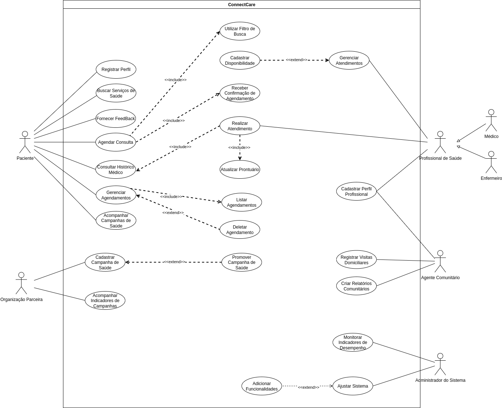

ConnectCare
O ConnectCare é uma plataforma digital desenvolvida para melhorar o acesso à saúde em comunidades vulneráveis, como a Vila Esperança. Sua proposta é conectar pacientes, profissionais de saúde e organizações parceiras por meio de tecnologias acessíveis, mesmo em regiões com infraestrutura limitada.

Especificação de Caso de Uso: Agendar Consulta
1. Breve Descrição
Este caso de uso permite ao ator Paciente realizar o agendamento de um serviço de saúde através da plataforma ConnectCare. O processo envolve a busca e filtragem por tipo de serviço, especialidade ou localização, a seleção de um horário disponível e a confirmação do agendamento.
2. Pré-Condições
- PC-1: O Paciente deve estar registrado e autenticado no sistema "ConnectCare".
- PC-2: Deve haver profissionais de saúde e/ou agentes comunitários com perfis cadastrados no sistema.
3. Fluxo Básico de Eventos (FB) - Realizar Novo Agendamento
Este fluxo descreve o caminho ideal para um novo agendamento.
- O Paciente acessa o sistema ConnectCare e seleciona a opção 'Agendar Consulta'.
- O sistema exibe as opções de busca por serviços de saúde (especialidade, localização, etc.).
- O Paciente utiliza o filtro de busca para encontrar um serviço de saúde desejado.
- O sistema exibe a disponibilidade de horários para o serviço/profissional selecionado.
- O Paciente seleciona um horário disponível.
- O sistema solicita a confirmação do agendamento ao Paciente.
- O Paciente confirma o agendamento.
- O sistema registra o agendamento e envia uma confirmação ao Paciente e ao Profissional de Saúde.
- O caso de uso termina.
4. Fluxos Alternativos (FA)
FA1: Paciente não encontra disponibilidade
Se o Paciente não encontrar um horário disponível que atenda às suas necessidades, ele pode optar por:
a. Alterar os filtros de busca (data, profissional, etc.) e tentar novamente.
b. Salvar a busca para ser notificado sobre novas disponibilidades.
c. Sair do processo de agendamento.
5. Fluxos de Exceção (FE)
FE1: Erro ao processar agendamento
Se ocorrer um erro no sistema durante o processamento do agendamento (ex: falha no banco de dados), o sistema deve:
a. Informar ao Paciente sobre o erro.
b. Não registrar o agendamento.
c. Sugerir que o Paciente tente novamente mais tarde.
6. Pós-Condições
- PósC-Sucesso: A consulta deve estar registrada no sistema, e tanto o Paciente quanto o Profissional de Saúde devem ter recebido a confirmação.
- PósC-Cancelamento: O agendamento selecionado é removido do sistema e o horário correspondente é liberado na agenda do profissional.
7. Pontos de Extensão
- PE-1: O ponto de extensão <
> Receber Confirmação de Agendamento é acionado após o sistema registrar o agendamento com sucesso.
8. Regras de Negócio
- RN-1: Um agendamento só pode ser realizado se houver disponibilidade de horário e profissional/unidade de saúde compatível com os critérios de busca do Paciente.
- RN-2: Agendamentos devem ser confirmados por notificação ao Paciente e ao Profissional de Saúde.
9. Requisitos Especiais
- RSE-1 (Desempenho): O aplicativo deve ser projetado para funcionar de forma eficiente em dispositivos simples e com conexões de internet limitadas, comuns em comunidades remotas.
- RSE-2 (Usabilidade): O sistema deve fornecer uma interface intuitiva e de fácil compreensão. Deve incluir recursos como mapas simplificados que podem ser acessados offline para ajudar na localização.
- RSE-3 (Segurança): A plataforma deve garantir a conformidade com as regulamentações de proteção de dados para manter as informações dos Pacientes seguras e confidenciais.
10. Informações Adicionais
- O sistema pode enviar notificações de lembretes antes da consulta, com informações relevantes como a necessidade de levar documentos e o uso de máscara.
Especificação de Caso de Uso: Consultar Histórico Médico
1. Breve Descrição
Este caso de uso descreve como um Paciente pode acessar e visualizar seu histórico médico completo dentro do sistema ConnectCare. Isso inclui informações sobre consultas anteriores, diagnósticos, tratamentos e medicações, proporcionando ao paciente uma visão abrangente de sua saúde.
2. Pré-Condições
- PC-1: O Paciente deve estar autenticado no sistema ConnectCare.
3. Fluxo Básico de Eventos (FB) - Visualizar Histórico
Este fluxo descreve o caminho ideal para visualizar o histórico médico.
- O caso de uso inicia quando o Paciente acessa o sistema ConnectCare e seleciona a opção "Consultar Histórico Médico".
- O sistema solicita a autenticação do Paciente (se ainda não estiver logado).
- O sistema recupera o histórico médico do Paciente do banco de dados.
- O sistema exibe o histórico médico do Paciente, organizado por data ou tipo de evento.
- O Paciente pode navegar e visualizar os detalhes de cada registro do histórico.
- O caso de uso termina com sucesso.
4. Fluxos Alternativos (FA)
FA1: Histórico vazio
Este fluxo é iniciado no passo 4 do Fluxo Básico, se o Paciente não possuir histórico médico registrado.
No passo 4 do Fluxo Básico, se o Paciente não possuir histórico médico registrado no sistema, o sistema deve:
a. Exibir uma mensagem informando que não há histórico disponível.
b. Sugerir ao Paciente que agende uma consulta para iniciar seu histórico.
5. Fluxos de Exceção (FE)
FE1: Erro ao carregar histórico
Este fluxo pode ser iniciado a qualquer momento durante a execução do caso de uso, se houver um erro no sistema.
Se ocorrer um erro no sistema ao tentar carregar o histórico médico (ex: problema de conexão com o banco de dados), o sistema deve:
a. Informar ao Paciente sobre o erro.
b. Sugerir que o Paciente tente novamente mais tarde.
6. Pós-Condições
- PósC-Sucesso: O Paciente terá visualizado seu histórico médico no sistema.
7. Pontos de Extensão
- PE-1: Visualizar Histórico do Paciente: O ponto de extensão <
> Visualizar Histórico do Paciente é acionado quando o Profissional de Saúde acessa o histórico do paciente durante um atendimento.
8. Regras de Negócio
- RN-1: O acesso ao histórico médico é restrito ao Paciente e a Profissionais de Saúde autorizados.
- RN-2: O sistema deve apresentar o histórico de forma clara e organizada.
9. Requisitos Especiais
- RSE-1 (Privacidade): O sistema deve garantir a privacidade e segurança dos dados do histórico médico do Paciente, seguindo as regulamentações de proteção de dados (e.g., LGPD).
10. Informações Adicionais
- Nenhuma informação adicional.
Especificação de Caso de Uso: Realizar Atendimento
1. Breve Descrição
Este caso de uso descreve o processo pelo qual um Profissional de Saúde realiza um atendimento a um Paciente utilizando o sistema ConnectCare. Durante o atendimento, o profissional pode acessar o histórico do paciente, registrar novas informações e atualizar o prontuário.
2. Pré-Condições
- PC-1: O Profissional de Saúde deve estar autenticado no sistema ConnectCare e ter acesso à funcionalidade de gerenciamento de atendimentos.
- PC-2: Deve haver um agendamento prévio para o atendimento ou o paciente deve ser atendido por demanda.
3. Fluxo Básico de Eventos (FB) - Registrar Atendimento
Este fluxo descreve o caminho ideal para registrar um atendimento.
- O caso de uso inicia quando o Profissional de Saúde acessa o sistema ConnectCare e seleciona a opção "Gerenciar Atendimentos".
- O sistema exibe a lista de agendamentos do profissional.
- O Profissional de Saúde seleciona o agendamento do Paciente a ser atendido.
- O sistema exibe as informações do Paciente e permite o acesso ao seu histórico médico.
- O Profissional de Saúde realiza o atendimento, registrando informações relevantes no prontuário do Paciente.
- O sistema atualiza o prontuário do Paciente com as novas informações.
- O caso de uso termina com sucesso.
4. Fluxos Alternativos (FA)
FA1: Paciente não comparece
Este fluxo é iniciado no passo 5 do Fluxo Básico, se o Paciente não comparecer ao atendimento.
No passo 5 do Fluxo Básico, se o Paciente não comparecer ao atendimento agendado, o Profissional de Saúde pode:
a. Marcar o agendamento como "Não Compareceu".
b. Enviar uma notificação ao Paciente para reagendamento.
5. Fluxos de Exceção (FE)
FE1: Erro ao registrar atendimento
Este fluxo pode ser iniciado a qualquer momento durante a execução do caso de uso, se houver um erro no sistema.
Se ocorrer um erro no sistema ao tentar registrar as informações do atendimento ou atualizar o prontuário (ex: falha de conexão), o sistema deve:
a. Informar ao Profissional de Saúde sobre o erro.
b. Salvar as informações temporariamente e tentar sincronizar novamente.
c. Sugerir que o Profissional de Saúde tente registrar as informações novamente.
6. Pós-Condições
- PósC-Sucesso: As informações do atendimento são registradas no sistema e o prontuário do Paciente é atualizado.
7. Pontos de Extensão
- PE-1: Atualizar Prontuário: O ponto de extensão <
> Atualizar Prontuário é acionado quando o Profissional de Saúde registra novas informações no prontuário do Paciente durante o atendimento.
8. Regras de Negócio
- RN-1: Todas as informações relevantes do atendimento devem ser registradas no prontuário do paciente.
- RN-2: O sistema deve garantir a integridade dos dados registrados.
9. Requisitos Especiais
- RSE-1 (Acesso Rápido): O sistema deve permitir que o Profissional de Saúde acesse rapidamente o histórico médico completo do Paciente durante o atendimento para auxiliar no diagnóstico e tratamento.
10. Informações Adicionais
- Nenhuma informação adicional.
Especificação de Caso de Uso: Gerenciar Agendamentos
1. Breve Descrição
Este caso de uso descreve o processo pelo qual um Paciente pode visualizar e gerenciar seus agendamentos no sistema ConnectCare. Isso inclui a capacidade de listar todos os agendamentos existentes e a opção de deletar agendamentos.
2. Pré-Condições
- PC-1: O Paciente deve estar autenticado no sistema ConnectCare.
3. Fluxo Básico de Eventos (FB) - Visualizar e Gerenciar Agendamentos
Este fluxo descreve o caminho ideal para visualizar e gerenciar agendamentos.
- O caso de uso inicia quando o Paciente acessa o sistema ConnectCare e seleciona a opção "Gerenciar Agendamentos".
- O sistema exibe uma lista de agendamentos associados ao Paciente.
- O Paciente pode visualizar os detalhes de cada agendamento (data, hora, serviço, profissional/paciente).
- O Paciente pode selecionar um agendamento e optar por deletá-lo.
- O sistema solicita confirmação para a exclusão do agendamento.
- O Paciente confirma a exclusão.
- O sistema remove o agendamento do banco de dados.
- O caso de uso termina com sucesso.
4. Fluxos Alternativos (FA)
FA1: Nenhum agendamento encontrado
Este fluxo é iniciado no passo 2 do Fluxo Básico, se não houver agendamentos para o Paciente.
No passo 2 do Fluxo Básico, se não houver agendamentos para o Paciente, o sistema deve:
a. Exibir uma mensagem informando que não há agendamentos.
b. Sugerir ao Paciente que agende uma nova consulta.
5. Fluxos de Exceção (FE)
FE1: Erro ao listar agendamentos
Este fluxo pode ser iniciado a qualquer momento durante a execução do caso de uso, se houver um erro no sistema.
Se ocorrer um erro no sistema ao tentar listar os agendamentos (ex: falha de conexão com o banco de dados), o sistema deve:
a. Informar ao Paciente sobre o erro.
b. Sugerir que o Paciente tente novamente mais tarde.
6. Pós-Condições
- PósC-Sucesso: O Paciente terá visualizado seus agendamentos gerenciados e poderá excluir um agendamento se necessário.
7. Pontos de Extensão
- PE-1: Listar Agendamentos: O ponto de extensão <
> Listar Agendamentos é acionado para exibir a lista de agendamentos. - PE-2: Deletar Agendamento: O ponto de extensão <
> Deletar Agendamento é acionado quando o Paciente optar por remover um agendamento.
8. Regras de Negócio
- RN-1: O Paciente pode deletar agendamentos.
- RN-2: O sistema deve notificar as partes envolvidas sobre qualquer alteração no agendamento.
9. Requisitos Especiais
- RSE-1 (Filtros): O sistema deve permitir que o Paciente filtre os agendamentos por data, status (confirmado, cancelado, realizado).
10. Informações Adicionais
- Nenhuma informação adicional.
Especificação de Caso de Uso: Registrar Visitas Domiciliares
1. Breve Descrição
Este caso de uso permite ao ator Agente Comunitário de Saúde registrar de forma padronizada as informações detalhadas das visitas domiciliares realizadas a pacientes ou famílias em sua área de atuação. O processo envolve a identificação do visitado, o registro da data, motivo, observações e resultados, garantindo um acompanhamento eficaz da saúde da comunidade.
2. Pré-Condições
- PC-1: O Agente Comunitário de Saúde deve estar registrado e autenticado no sistema "ConnectCare".
- PC-2: Deve haver pacientes previamente cadastrados no sistema.
3. Fluxo Básico de Eventos (FB) – Registro de Nova Visita
Este fluxo descreve o caminho ideal para registrar uma nova visita domiciliar.
- O caso de uso inicia quando o Agente Comunitário de Saúde seleciona a opção "Registrar Visita Domiciliar".
- O sistema exibe um formulário padronizado para o registro da visita.
- O Agente Comunitário de Saúde informa os dados da visita:
- Identificação do paciente (busca por nome, CPF, ou outro identificador).
- Data e hora da visita.
- Motivo principal da visita (seleção de lista pré-definida).
- Observações gerais e resultados da visita.
- Encaminhamentos realizados ou pendências identificadas.
- O Agente Comunitário de Saúde confirma o registro das informações.
- O sistema valida os dados e persiste o registro da visita no banco de dados.
- O sistema exibe uma mensagem de confirmação de que a visita foi registrada com sucesso.
- O caso de uso é encerrado com sucesso.
4. Fluxos Alternativos (FA)
FA1: Anexar Mídia à Visita
Este fluxo é iniciado no passo 4 do Fluxo Básico, quando o Agente Comunitário de Saúde opta por anexar mídias.
- No passo 4 do Fluxo Básico, o Agente Comunitário de Saúde pode optar por anexar mídias (fotos, áudios) relacionadas à visita.
- O sistema permite o upload de arquivos de mídia.
- O Agente Comunitário de Saúde seleciona e anexa os arquivos.
- O sistema associa os arquivos de mídia ao registro da visita.
- O fluxo retorna ao passo 5 do Fluxo Básico.
5. Fluxos de Exceção (FE)
FE1: Dados Obrigatórios Incompletos
Este fluxo é iniciado no passo 4 do Fluxo Básico, se o Agente Comunitário tentar confirmar o registro com campos obrigatórios não preenchidos ou inválidos.
- No passo 4 do Fluxo Básico, se o Agente Comunitário tentar confirmar o registro com campos obrigatórios não preenchidos ou inválidos, o sistema deve indicar os campos que precisam de correção.
- O fluxo retorna ao passo 4 do Fluxo Básico.
FE2: Falha no Registro da Visita
Este fluxo é iniciado no passo 5 do Fluxo Básico, se ocorrer uma falha técnica durante a tentativa de salvar o registro.
- No passo 5 do Fluxo Básico, se ocorrer uma falha técnica (ex: erro de conectividade, problema no servidor) durante a tentativa de salvar o registro, o sistema deve exibir uma mensagem de erro.
- O sistema sugere que o Agente Comunitário tente novamente mais tarde.
- O caso de uso é encerrado.
6. Pós-Condições
- PósC-Sucesso: Uma nova visita domiciliar é registrada no sistema, associada ao Agente Comunitário e ao paciente.
- PósC-Falha: O registro da visita não é persistente no sistema.
7. Pontos de Extensão
- PE-1: N/A: Não há pontos de extensão.
8. Regras de Negócio
- RN-1: Todas as visitas domiciliares devem ser registradas para acompanhamento e análise.
- RN-2: O sistema deve garantir a consistência e a integridade dos dados registrados.
9. Requisitos Especiais
- RSE-1 (Offline): O sistema deve permitir o registro de visitas domiciliares mesmo sem conexão com a internet, sincronizando os dados automaticamente quando a conexão for restabelecida.
10. Informações Adicionais
- O sistema pode sugerir agendamento de próximas visitas com base nas necessidades identificadas.
- Integrar a funcionalidade de geolocalização para registrar o local exato da visita, se permitido e relevante.
Especificação de Caso de Uso: Criar Relatórios Comunitários
1. Breve Descrição
Este caso de uso descreve o processo pelo qual um Agente Comunitário gera relatórios sobre as atividades e dados coletados na comunidade. Esses relatórios podem incluir informações sobre visitas domiciliares, indicadores de saúde da população, entre outros, visando subsidiar a tomada de decisões e o planejamento de ações futuras.
2. Pré-Condições
- PC-1: O Agente Comunitário deve estar autenticado no sistema ConnectCare e ter permissão para criar relatórios comunitários.
3. Fluxo Básico de Eventos (FB) - Gerar Relatório
Este fluxo descreve o caminho ideal para gerar um relatório comunitário.
- O caso de uso inicia quando o Agente Comunitário acessa o sistema ConnectCare e seleciona a opção "Criar Relatórios Comunitários".
- O sistema exibe as opções de tipos de relatórios e filtros disponíveis (período, área geográfica, tipo de dado, etc).
- O Agente Comunitário seleciona o tipo de relatório desejado e aplica os filtros necessários.
- O sistema processa os dados com base nos filtros selecionados.
- O sistema gera o relatório comunitário no formato escolhido (ex: PDF).
- O sistema exibe o relatório gerado ou oferece a opção de download.
- O caso de uso termina com sucesso.
4. Fluxos Alternativos (FA)
FA1: Relatório sem dados
Este fluxo é iniciado no passo 5 do Fluxo Básico, se não houver dados para o relatório.
No passo 5 do Fluxo Básico, se, após a aplicação dos filtros, não houver dados disponíveis para a geração do relatório, o sistema deve:
a. Informar ao Agente Comunitário que não foram encontrados dados para os critérios selecionados.
b. Sugerir a alteração dos filtros ou a verificação da entrada de dados.
5. Fluxos de Exceção (FE)
FE1: Erro ao gerar relatório
Este fluxo pode ser iniciado a qualquer momento durante a execução do caso de uso, se houver um erro no sistema.
Se ocorrer um erro no sistema durante o processo de geração do relatório (ex: falha no processamento de dados), o sistema deve:
a. Informar ao Agente Comunitário sobre o erro.
b. Registrar o erro para análise e correção.
c. Sugerir que o Agente Comunitário tente gerar o relatório novamente mais tarde.
6. Pós-Condições
- PósC-Sucesso: O relatório comunitário é gerado com sucesso e está disponível para visualização ou download.
7. Pontos de Extensão
- PE-1: N/A: Não há pontos de extensão.
8. Regras de Negócio
- RN-1: Os relatórios devem ser gerados com base em dados consistentes e atualizados.
- RN-2: O sistema deve garantir a segurança e a privacidade dos dados apresentados nos relatórios.
9. Requisitos Especiais
- RSE-1 (Personalização): O sistema deve permitir que o Agente Comunitário personalize os relatórios, escolhendo quais informações incluir e o formato de apresentação.
10. Informações Adicionais
- Nenhuma informação adicional.